Mostrar código R
n<-10; p<-0.5; k<-3
# Estas dos expresiones son EXACTAMENTE IGUALES:
pbinom(k, n, p, lower.tail=FALSE) # P(X > 3)[1] 0.828125Mostrar código R
1 - pbinom(k, n, p) # 1 - P(X ≤ 3)[1] 0.828125Tema II (Parte II) — La Distribución Normal, Modelos Discretos y Aproximaciones
Dpto. Estadística e Investigación Operativa, Universidad de Granada
2026-01-01
Conexión: R dispone de funciones específicas para cada distribución de probabilidad. Aprender a usarlas correctamente es tan importante como entender la teoría.
lower.tail — La Opción Más Útil de las Funciones pTodas las funciones p (acumuladas) tienen el argumento lower.tail:
lower.tail = TRUE (por defecto):
- pnorm(k) = \(P(X \leq k)\)
- pbinom(k, n, p) = \(P(X \leq k)\)
- ppois(k, lambda) = \(P(X \leq k)\)
Calcula el área desde \(-\infty\) hasta \(k\)
lower.tail = FALSE:
- pnorm(k, lower.tail=FALSE) = \(P(X > k)\)
- pbinom(k, n, p, lower.tail=FALSE) = \(P(X > k)\)
- ppois(k, lambda, lower.tail=FALSE) = \(P(X > k)\)
Calcula el área desde \(k\) hasta \(+\infty\)
Equivalencia fundamental:
lower.tail — Equivalencias y PrecaucionesVariables continuas (Normal, t, χ², F):
| Quiero calcular… | Normal (continua) | Binomial/Poisson (discreta) |
|---|---|---|
| \(P(X \leq k)\) | pnorm(k) |
pbinom(k, n, p) / ppois(k, λ) |
| \(P(X < k)\) | pnorm(k) (= \(P(X \leq k)\)) |
pbinom(k-1, n, p) ⚠️ |
| \(P(X > k)\) | pnorm(k, lower.tail=FALSE) |
pbinom(k, n, p, lower.tail=FALSE) |
| \(P(X \geq k)\) | pnorm(k, lower.tail=FALSE) (= \(P(X > k)\)) |
1 - pbinom(k-1, n, p) ⚠️ |
Advertencia
Truco para estudiantes: En variables discretas (Binomial, Poisson), \(P(X < k) \neq P(X \leq k)\). La diferencia es \(P(X=k)\). Usad lower.tail=FALSE para colas derechas y recordad restar 1 al límite para desigualdades estrictas.
Puente con T03 — Estimación: La distribución Normal es la base del Teorema Central del Límite, que veremos en el Tema 3. Todo lo que aprendas aquí sobre pnorm(), qnorm() y Z-scores se usará para construir intervalos de confianza y contrastes de hipótesis.
Carl Friedrich Gauss (1777–1855) introdujo esta distribución estudiando errores de medición astronómica. Originalmente llamada “campana de Gauss”, hoy es la distribución más importante en estadística.
¿Por qué es tan ubicua? Por el Teorema Central del Límite: la suma de muchas variables independientes tiende a una Normal, sin importar su distribución original. Por eso aparece en biología, medicina, economía, física…
curve(dnorm(x, 0, 1), -4, 4, lwd=3, col="steelblue",
main=expression(paste("Distribución Normal ", N(mu, sigma^2))),
xlab="x", ylab=expression(f(x)))
# μ ± σ (68%)
x1<-seq(-1,1,0.01); polygon(c(x1,rev(x1)),c(dnorm(x1),rep(0,length(x1))),col=rgb(0,0,1,0.2),border=NA)
# μ ± 2σ (95%)
x2<-seq(-2,2,0.01); polygon(c(x2,rev(x2)),c(dnorm(x2),rep(0,length(x2))),col=rgb(0,0,1,0.1),border=NA)
abline(v=c(-2,-1,0,1,2), lty=c(3,2,1,2,3), col=c("grey","grey","coral","grey","grey"))
text(0, 0.25, "68%", cex=1.2); text(0, 0.05, "95%", cex=1.2)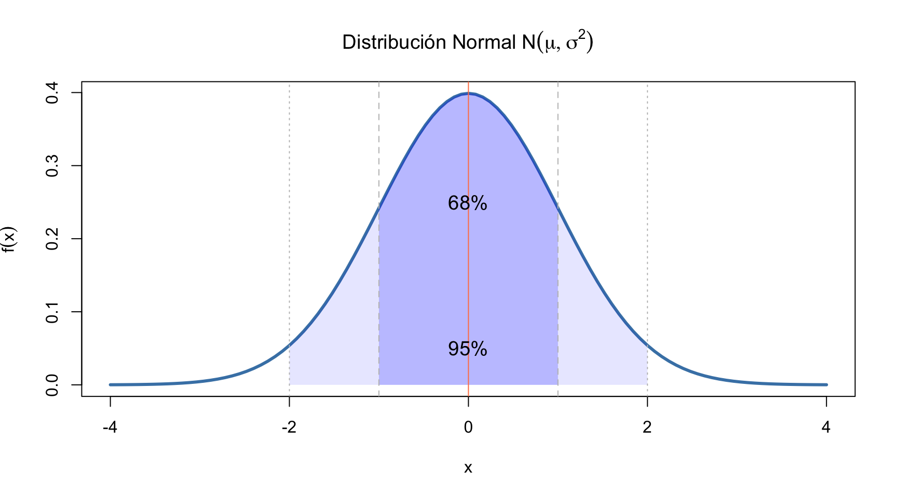
La curva normal describe la distribución de errores y de fenómenos naturales donde muchas causas pequeñas se suman. Hoy, en fisioterapia, modela: fuerza muscular, ROM articular, presión arterial, y prácticamente cualquier variable biológica continua.
Nota
\[f(x) = \frac{1}{\sigma\sqrt{2\pi}} \exp\left\{-\frac{(x-\mu)^2}{2\sigma^2}\right\}, \quad -\infty < x < \infty\]
Ejemplo clínico: Fuerza de prensión manual: \(X \sim N(30, 8^2)\) kg
Efecto de cambiar \(\mu\) y \(\sigma\) en la forma de la campana:
par(mfrow=c(1,2), mar=c(4,4,3,1))
# Cambiar μ
curve(dnorm(x, 0, 1), -5, 8, lwd=3, col="steelblue", ylab="Densidad",
main=expression(paste("Cambiando ", mu, " (", sigma, "=1)")), xlab="x")
curve(dnorm(x, 2, 1), -5, 8, lwd=3, col="seagreen", add=TRUE)
curve(dnorm(x, 4, 1), -5, 8, lwd=3, col="darkgreen", add=TRUE)
abline(v=c(0,2,4), lty=2, col=c("steelblue","seagreen","darkgreen"))
legend("topright", c(expression(mu==0),expression(mu==2),expression(mu==4)),
col=c("steelblue","coral","darkgreen"), lwd=3, bty="n")
# Cambiar σ
curve(dnorm(x, 0, 0.5), -5, 5, lwd=3, col="steelblue", ylab="",
main=expression(paste("Cambiando ", sigma, " (", mu, "=0)")), xlab="x")
curve(dnorm(x, 0, 1), -5, 5, lwd=3, col="seagreen", add=TRUE)
curve(dnorm(x, 0, 2), -5, 5, lwd=3, col="darkgreen", add=TRUE)
legend("topright", c(expression(sigma==0.5),expression(sigma==1),expression(sigma==2)),
col=c("steelblue","coral","darkgreen"), lwd=3, bty="n")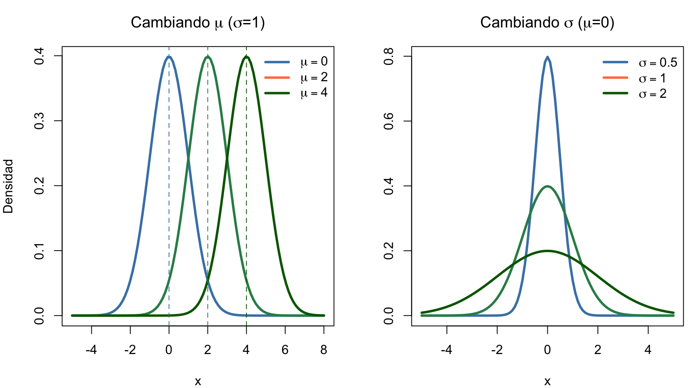
\(\mu\) desplaza, \(\sigma\) ensancha. La Normal es simétrica: media = mediana = moda.
La visualización comparativa de escalas originales vs. estandarizadas se muestra en la siguiente diapositiva.
Importante
Definición general: La estandarización transforma cualquier variable para que tenga media 0 y varianza 1:
\[Z = \frac{X - E(X)}{\sqrt{\text{Var}(X)}} = \frac{X - \mu_X}{\sigma_X}\]
Si \(X \sim N(\mu, \sigma^2)\), entonces \(Z \sim N(0,1)\). La distribución \(N(0,1)\) se llama Normal estándar.
Propiedades fundamentales de Z: - \(E(Z) = 0\) y \(\text{Var}(Z) = 1\) (siempre, para cualquier distribución) - Adimensional: Z no tiene unidades → permite comparar variables completamente diferentes - \(Z = 2\) siempre significa “2 desviaciones estándar por encima de la media”, sea cual sea la variable original
Permite usar una única tabla de probabilidades: Sin estandarización, necesitaríamos infinitas tablas (una para cada combinación de \(\mu\) y \(\sigma\)). Con Z, solo necesitamos la tabla de la \(N(0,1)\).
Hace comparables mediciones distintas: ¿Qué es más extremo: una presión arterial de 150 mmHg o un IMC de 32 kg/m²? Los Z-scores responden: \(z_{PA} = (150-120)/15 = 2.0\) vs \(z_{IMC} = (32-25)/4 = 1.75\) → la PA es más extrema.
Base de toda la inferencia: Los intervalos de confianza y tests de hipótesis usan valores estandarizados (\(z_{\alpha/2} = 1.96\), \(t_{\alpha/2}\)).
Tensión Arterial Sistólica: \(X \sim N(120, 15^2)\) mmHg
| Paciente | TA (mmHg) | \(Z = \frac{X-120}{15}\) | Interpretación clínica |
|---|---|---|---|
| A | 120 | 0.0 | En la media poblacional |
| B | 135 | 1.0 | 1 DE por encima |
| C | 105 | −1.0 | 1 DE por debajo |
| D | 150 | 2.0 | 2 DE por encima → HTA |
| E | 90 | −2.0 | 2 DE por debajo → Hipotensión |
LDL-Colesterol: \(X \sim N(130, \sigma^2=40)\) mg/dL → \(\sigma = \sqrt{40} \approx 6.32\)
| Cálculo | Fórmula | Resultado |
|---|---|---|
| Paciente con LDL = 140 | \(z = \frac{140-130}{6.32}\) | \(z \approx 1.58\) |
| Percentil 90 | \(x = 130 + z_{0.90} \times 6.32\) | \(x \approx 130 + 1.28 \times 6.32 = 138.1\) |
| \(P(LDL > 140)\) | \(P(Z > 1.58)\) | \(\approx 0.057\) (5.7%) |
Glucemia en ayunas: \(X \sim N(100, 10^2)\) mg/dL
| Paciente | Glucemia | Z-score | Interpretación |
|---|---|---|---|
| Normal | 90 | \(z = -1.0\) | 1 DE bajo la media |
| Límite | 100 | \(z = 0.0\) | En la media |
| Prediabetes | 120 | \(z = 2.0\) | 2 DE arriba |
| Diabetes | 140 | \(z = 4.0\) | Muy extremo (\(P < 0.001\)) |
La clave práctica: Para calcular cualquier probabilidad Normal, convertimos a Z y usamos \(N(0,1)\):
\[P(X \leq x) = P\left(Z \leq \frac{x - \mu}{\sigma}\right) = \Phi\left(\frac{x - \mu}{\sigma}\right)\]
mu <- 30; sigma <- 8; x_obs <- 22
z_obs <- (x_obs - mu) / sigma
par(mfrow=c(1,2), mar=c(4,4,3,1))
# Escala original X ~ N(30, 8²)
curve(dnorm(x, mu, sigma), mu-24, mu+24, lwd=3, col="steelblue",
main=expression(paste("Original: X ~ N(30, ", 8^2, ")")),
xlab="Fuerza (kg)", ylab="f(x)")
abline(v=x_obs, col="darkgreen", lwd=2); text(x_obs, 0.04, "x=22", col="darkgreen", pos=4)
# Escala estandarizada Z ~ N(0,1)
curve(dnorm(x), -4, 4, lwd=3, col="seagreen",
main="Estandarizada: Z ~ N(0,1)",
xlab="Z", ylab=expression(phi(z)))
abline(v=z_obs, col="darkgreen", lwd=2); text(z_obs, 0.3, paste0("z=",z_obs), col="darkgreen", pos=4)X = 22 kg → Z = -1 P(X < 22 ) = P(Z < -1 ) = 0.1587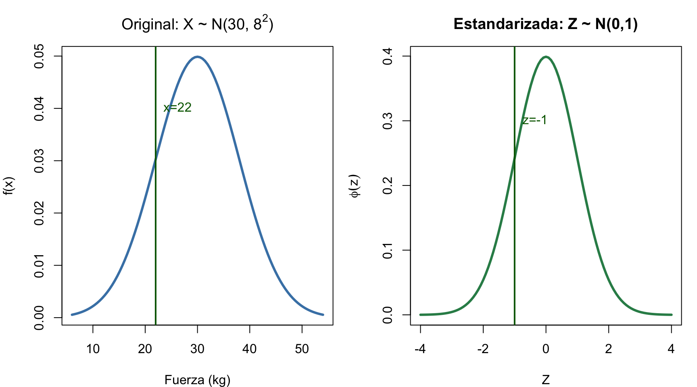
El área a la izquierda de \(x=22\) en la escala original es EXACTAMENTE igual al área a la izquierda de \(z=-1\) en la escala estandarizada.
mu <- 30; sigma <- 8
curve(dnorm(x, mu, sigma), mu-24, mu+24, col="steelblue", lwd=3,
main="Fuerza de Prensión Manual — N(30, 8²) kg",
xlab="Kilogramos", ylab="Densidad", cex.lab=1.2)
abline(v=c(mu-2*sigma, mu-sigma, mu, mu+sigma, mu+2*sigma),
lty=c(3,3,2,3,3), lwd=c(1,1,2,1,1), col=c("grey","grey","coral","grey","grey"))
text(mu, 0.052, "μ=30", col="darkgreen", font=2)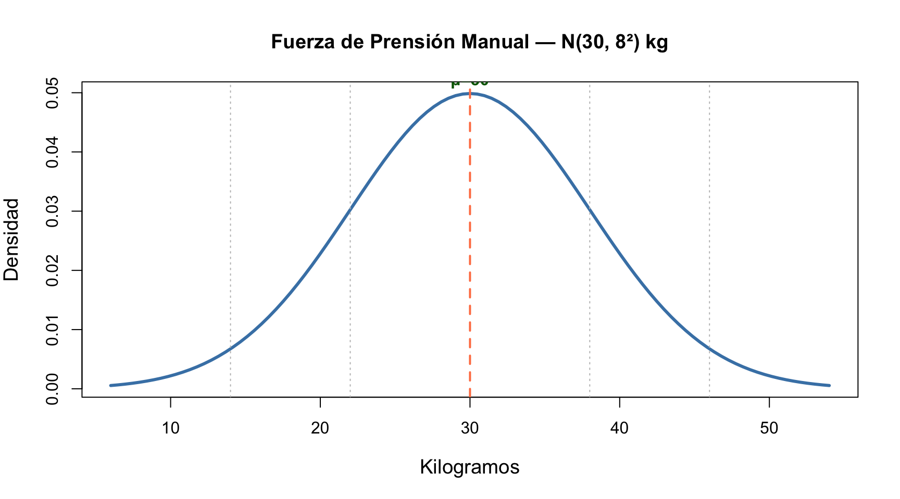
\[P(X < 22) = P\left(Z < \frac{22-30}{8}\right) = P(Z < -1) = 0.159\] \[P(22 < X < 38) = P(-1 < Z < 1) = 0.683\]
Los más usados en inferencia estadística:
| Percentil | Z | Uso |
|---|---|---|
| 90% | 1.282 | IC 80% |
| 95% | 1.645 | Test unilateral |
| 97.5% | 1.960 | IC 95% bilateral |
| 99% | 2.326 | IC 98% |
| 99.5% | 2.576 | IC 99% |
curve(dnorm(x), -4, 4, col="steelblue", lwd=2,
main="Z = ±1.96 deja 95% central",
xlab="z", ylab=expression(varphi(z)))
abline(v=c(-1.96, 1.96), col="darkgreen", lty=2, lwd=2)
xr <- seq(1.96, 4, 0.01); yr <- dnorm(xr)
polygon(c(xr, rev(xr)), c(yr, rep(0,length(yr))), col=rgb(0,0.5,0.3,0.2), border=NA)
xl <- seq(-4, -1.96, 0.01); yl <- dnorm(xl)
polygon(c(xl, rev(xl)), c(yl, rep(0,length(yl))), col=rgb(0,0.5,0.3,0.2), border=NA)
text(c(-2.5, 0, 2.5), c(0.03, 0.25, 0.03), c("2.5%","95%","2.5%"), font=2)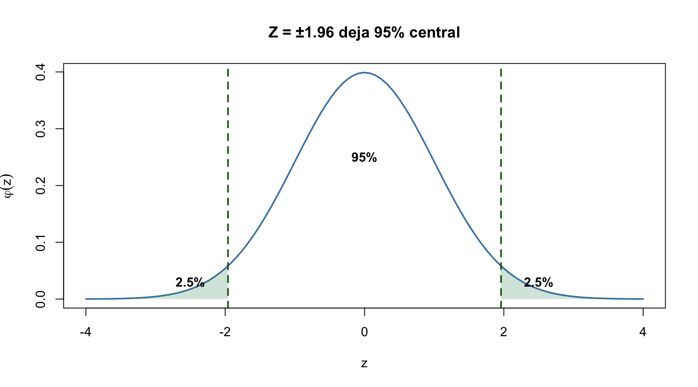
Z para IC 95%: 1.96
Z para IC 99%: 2.576Un paciente tiene Z = −1.5 en fuerza de prensión y Z = +2.1 en IMC. ¿Cuál de las dos mediciones es más preocupante? ¿Por qué?
Conexión: Muchos fenómenos en fisioterapia son conteos: número de pacientes que responden a un tratamiento, número de sesiones necesarias para alcanzar un objetivo funcional. Las distribuciones Binomial y Poisson modelan estos eventos discretos.
Jacob Bernoulli (1654–1705) en su obra póstuma Ars Conjectandi (1713) estudió experimentos con dos resultados posibles (éxito/fracaso). Su sobrino Daniel Bernoulli aplicó estos modelos a la medicina.
¿Por qué “Binomial”? La fórmula usa el coeficiente binomial \(\binom{n}{k} = \frac{n!}{k!(n-k)!}\), que cuenta el número de formas de elegir \(k\) éxitos entre \(n\) ensayos.
En Fisioterapia: La Binomial modela todo lo que consiste en contar éxitos en un número fijo de pacientes: ¿cuántos de 10 pacientes mejoran con una terapia? ¿cuántos de 20 tratamientos tienen éxito?
Tip
Para recordar: Binomial = nº fijo de ensayos (\(n\)) + probabilidad constante (\(p\)) + independencia entre ensayos. Si tratamos 10 pacientes con la misma terapia y cada uno mejora o no independientemente → Binomial.
Nota
\[P(X = k) = \binom{n}{k} p^k (1-p)^{n-k}, \quad k = 0,1,\ldots,n\]
donde \(\binom{n}{k} = \frac{n!}{k!(n-k)!}\) es el coeficiente binomial.
Ejemplo clínico: Fármaco cura al 70% de pacientes (\(p=0.7\)), \(n=10\) tratados.
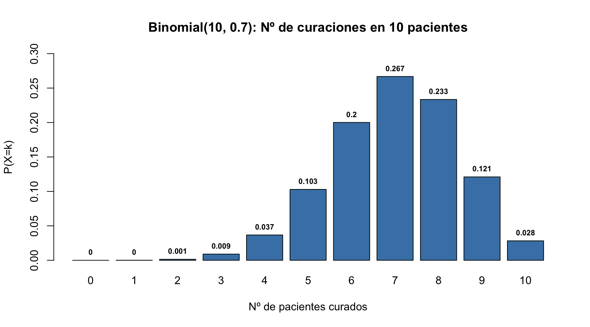
Cálculo a mano — \(P(X=7)\):
\(\binom{10}{7} = \frac{10 \cdot 9 \cdot 8}{3 \cdot 2 \cdot 1} = 120\)
\(P(X=7) = 120 \cdot (0.7)^7 \cdot (0.3)^3 = 120 \cdot 0.0824 \cdot 0.027 = 0.267\)
n <- 10; p <- 0.7; k <- 0:n
Fx <- pbinom(k, n, p)
plot(k, Fx, type="s", lwd=3, col="seagreen",
main=expression(paste("f.d.a. Binomial(10, 0.7): F(k) = P(X ≤ k)")),
xlab="Nº de pacientes curados (k)", ylab="F(k)", ylim=c(0,1))
abline(h=c(0,0.5,1), lty=3, col="grey"); points(k, Fx, pch=19, col="seagreen", cex=1.3)
# Marcar F(7)
points(7, Fx[8], pch=19, col="darkgreen", cex=1.8)
text(7, Fx[8]-0.05, paste0("F(7) = ", round(Fx[8],3)), col="darkgreen", font=2)\[F(7) = P(X \leq 7) = \sum_{k=0}^{7} \binom{10}{k} 0.7^k \cdot 0.3^{10-k}\]
Advertencia
En VA discretas, los límites de los intervalos importan:
pbinom(k, n, p)pbinom(k-1, n, p) ← ¡no es lo mismo!1 - pbinom(k-1, n, p)1 - pbinom(k, n, p)P(X ≤ 7) = 0.6172
P(X < 7) = P(X ≤ 6) = 0.3504 ← ¡diferente!
P(X ≥ 7) = 0.6496
P(X > 7) = 0.3828Siméon Denis Poisson (1781–1840) publicó esta distribución en 1837 en su obra Recherches sur la probabilité des jugements. Originalmente modelaba el número de condenas erróneas en juicios.
¿Cuándo surge? La Poisson es el límite de la Binomial cuando \(n \to \infty\) y \(p \to 0\) manteniendo \(\lambda = n \cdot p\) constante. Esto la hace ideal para eventos raros en grandes poblaciones.
En Fisioterapia: La Poisson modela eventos que ocurren con tasa constante: nº de pacientes que llegan a urgencias por esguince en un turno, nº de caídas por mes en una residencia, nº de reacciones adversas por año en una clínica.
Tip
Para recordar: Poisson = tasa constante (\(\lambda\)) + eventos independientes en el tiempo. Si registramos cuántos pacientes llegan con lumbalgia aguda cada semana → Poisson.
Nota
\[P(X = k) = \frac{\lambda^k e^{-\lambda}}{k!}, \quad k = 0, 1, 2, \ldots\]
Ejemplo clínico: Reacciones adversas en clínica de fisioterapia: \(\lambda = 3\)/día
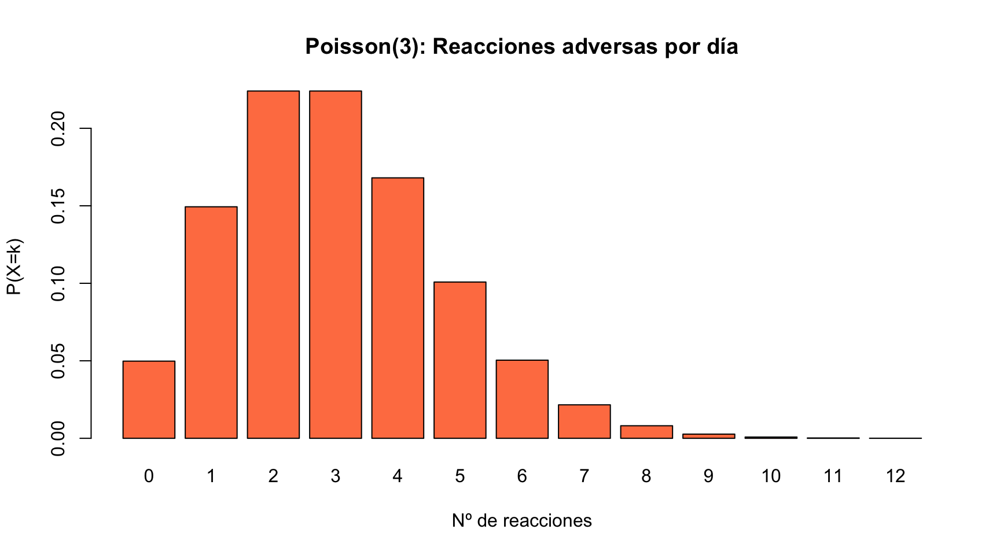
Cálculo a mano — \(P(X=5)\):
\(P(X=5) = \frac{3^5 e^{-3}}{5!} = \frac{243 \cdot 0.0498}{120} \approx 0.101\)
lambda <- 3; k <- 0:12
Fx <- ppois(k, lambda)
plot(k, Fx, type="s", lwd=3, col="seagreen",
main=expression(paste("f.d.a. Poisson(λ=3): F(k) = P(X ≤ k)")),
xlab="Nº de reacciones adversas (k)", ylab="F(k)", ylim=c(0,1))
abline(h=c(0,0.5,1), lty=3, col="grey"); points(k, Fx, pch=19, col="seagreen", cex=1.3)
# Marcar F(2) y F(5)
points(c(2,5), Fx[c(3,6)], pch=19, col=c("darkred","steelblue"), cex=1.8)
text(3, Fx[3]+0.05, paste0("F(2) = ", round(Fx[3],3)), col="darkgreen", font=2)
text(6, Fx[6]+0.05, paste0("F(5) = ", round(Fx[6],3)), col="steelblue", font=2)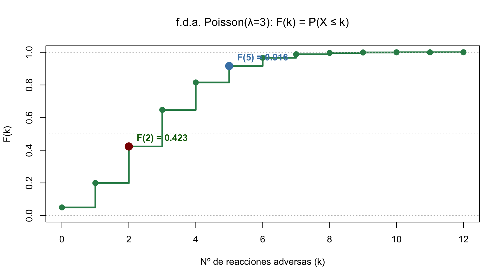
\[P(X \leq 2) = \sum_{k=0}^{2} \frac{3^k e^{-3}}{k!} \quad P(2 < X \leq 5) = F(5) - F(2)\]
La distribución t-Student la usaremos en el Tema 4 para comparar medias de dos grupos de tratamiento en fisioterapia.
William S. Gosset (1908), químico de Guinness, publicó bajo el seudónimo “Student”. Descubrió que al estimar \(\sigma\) con \(s\), el cociente \(\frac{\bar{x}-\mu}{s/\sqrt{n}}\) NO sigue una Normal, sino una distribución con colas más pesadas.
\[T = \frac{\bar{X} - \mu}{S/\sqrt{n}} \sim t_{n-1}\]
Propiedades: - Simétrica alrededor de 0 (como la Normal) - Colas más pesadas que la Normal → valores extremos más probables - Cuando \(n \to \infty\), \(t_{n-1} \to N(0,1)\) - Un solo parámetro: grados de libertad (\(gl = n-1\))
curve(dnorm(x), -4, 4, lwd=3, col="steelblue", ylab="Densidad",
main="Normal vs t-Student (simétrica, colas pesadas)")
curve(dt(x, 3), -4, 4, lwd=3, col="seagreen", add=TRUE)
curve(dt(x, 10), -4, 4, lwd=3, col="darkgreen", add=TRUE)
legend("topright", c("N(0,1)","t(3)","t(10)"), col=c("steelblue","coral","darkgreen"), lwd=3, bty="n")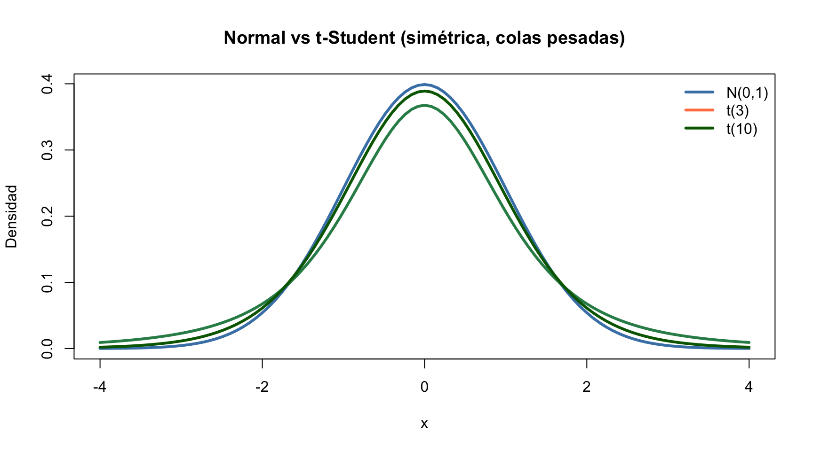
Uso principal: IC para la media con \(\sigma\) desconocida, tests t para una y dos muestras.
La distribución χ² la usaremos en el Tema 5 para analizar tablas de contingencia y estudiar la asociación entre tratamientos de fisioterapia y resultados clínicos.
Karl Pearson (1900). Surge como suma de \(k\) normales estándar independientes al cuadrado:
\[\chi^2_k = Z_1^2 + Z_2^2 + \cdots + Z_k^2 \sim \chi^2_k\]
Propiedades: - NO es simétrica (asimétrica positiva, cola a la derecha) - Solo toma valores \(\geq 0\) - \(E(\chi^2_k) = k\), \(\text{Var}(\chi^2_k) = 2k\) - Cuando \(k \to \infty\), tiende a Normal
curve(dchisq(x, 1), 0, 15, lwd=3, col="seagreen", ylab="Densidad",
main=expression(paste(chi^2, " — Asimétrica, solo valores ≥ 0")))
curve(dchisq(x, 3), 0, 15, lwd=3, col="darkgreen", add=TRUE)
curve(dchisq(x, 6), 0, 15, lwd=3, col="steelblue", add=TRUE)
legend("topright", c(expression(chi[1]^2),expression(chi[3]^2),expression(chi[6]^2)),
col=c("seagreen","darkgreen","steelblue"), lwd=3, bty="n")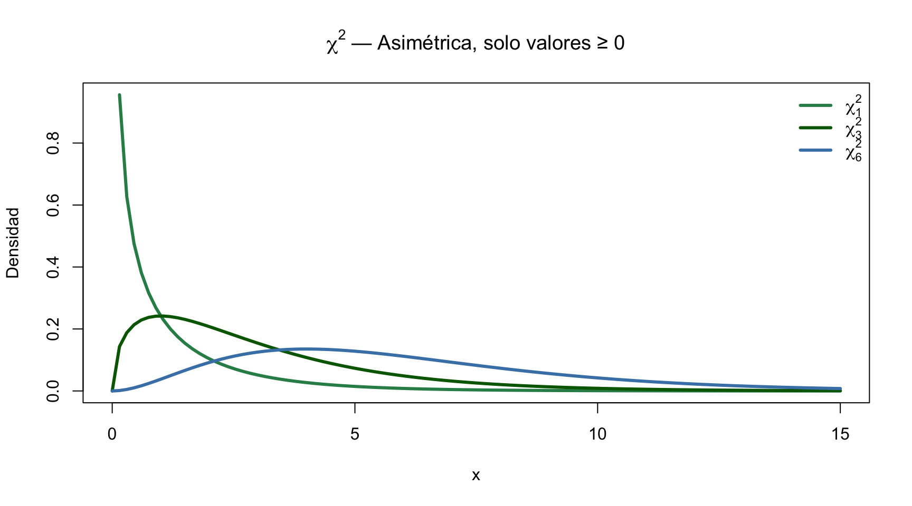
Uso principal: Test \(\chi^2\) para tablas de contingencia, test de bondad de ajuste.
La distribución F la usaremos en el Tema 6 al evaluar modelos de regresión y comparar la variabilidad explicada por distintas variables clínicas.
George W. Snedecor (1934), nombrada en honor a R.A. Fisher. Surge como cociente de dos \(\chi^2\) independientes divididas por sus grados de libertad:
\[F_{k_1, k_2} = \frac{\chi^2_{k_1} / k_1}{\chi^2_{k_2} / k_2}\]
Propiedades: - NO es simétrica (asimétrica positiva, como \(\chi^2\)) - Solo toma valores \(\geq 0\) - Dos parámetros: \(gl_1\) (numerador) y \(gl_2\) (denominador)
curve(df(x, 5, 5), 0, 5, lwd=3, col="steelblue", ylab="Densidad",
main="Distribución F — Asimétrica, dos parámetros")
curve(df(x, 10, 5), 0, 5, lwd=3, col="seagreen", add=TRUE)
curve(df(x, 5, 20), 0, 5, lwd=3, col="darkgreen", add=TRUE)
legend("topright", c("F(5,5)","F(10,5)","F(5,20)"), col=c("steelblue","coral","darkgreen"), lwd=3, bty="n")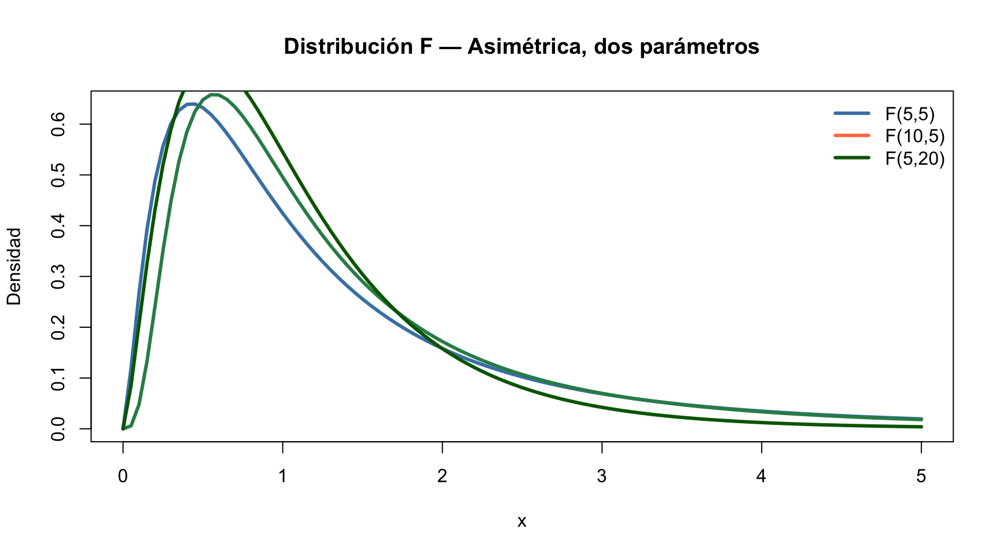
Uso principal: Test F para igualdad de varianzas, ANOVA, regresión (test F global).
| Distribución | ¿Simétrica? | P-valor bilateral | Función R |
|---|---|---|---|
| Normal | ✓ Sí | 2 * pnorm(-abs(z)) |
pnorm() |
| t-Student | ✓ Sí | 2 * pt(-abs(t), df) |
pt() |
| \(\chi^2\) | ✗ No | No tiene sentido bilateral (test de una cola) | pchisq() |
| F | ✗ No | Usar cola adecuada según \(F_{obs}\) | pf() |
Para \(\chi^2\) y F (asimétricas), el test es inherentemente unilateral porque solo nos preocupan valores grandes del estadístico (discrepancias grandes de \(H_0\)).
χ² = 13.87 gl = 6 → P = 0.0311
F = 3.5 gl = 5 , 20 → P = 0.0196Advertencia
Para estudiantes: t es simétrica → P-valor bilateral se calcula como \(2 \times P(T > |t|)\). \(\chi^2\) y F no son simétricas → el P-valor se calcula solo en la cola correspondiente. Nunca multipliques por 2 para \(\chi^2\) o F.
| Situación clínica | Distribución | Parámetros | Función R |
|---|---|---|---|
| ROM, fuerza, PA (variables continuas) | Normal | \(\mu, \sigma\) | dnorm(), pnorm() |
| Éxitos en n pacientes (curación, mejoría) | Binomial | \(n, p\) | dbinom(), pbinom() |
| Eventos raros por unidad de tiempo | Poisson | \(\lambda\) | dpois(), ppois() |
| Inferencia sobre medias | t-Student | \(gl\) | dt(), pt() |
| Comparación de varianzas | F de Snedecor | \(gl_1, gl_2\) | df(), pf() |
| Tablas de contingencia | \(\chi^2\) | \(gl\) | dchisq(), pchisq() |
Tip
Regla nemotécnica: d = densidad/probabilidad puntual, p = probabilidad acumulada (CDF), q = cuantil (percentil), r = aleatorio.
| Normal | Binomial | Poisson | |
|---|---|---|---|
| Tipo | Continua | Discreta | Discreta |
| Parámetros | \(\mu, \sigma\) | \(n, p\) | \(\lambda\) |
| Soporte | \(\mathbb{R}\) | \(\{0,\ldots,n\}\) | \(\{0,1,2,\ldots\}\) |
| \(E(X)\) | \(\mu\) | \(np\) | \(\lambda\) |
| \(\text{Var}(X)\) | \(\sigma^2\) | \(np(1-p)\) | \(\lambda\) |
| Ejemplo clínico | ROM, fuerza | Éxitos terapéuticos | Eventos adversos |
par(mfrow=c(1,3), mar=c(4,4,3,1))
curve(dnorm(x), -4,4, col="steelblue", lwd=2, main="N(0,1)", xlab="x")
barplot(dbinom(0:10,10,0.5), names=0:10, col="seagreen",
main="Bin(10,0.5)", xlab="x", ylab="P(X=x)")
barplot(dpois(0:10,3), names=0:10, col="seagreen",
main="Pois(λ=3)", xlab="x", ylab="P(X=x)")Conexión T02→T03: Las aproximaciones entre distribuciones son la base del Teorema Central del Límite, que en el Tema 3 nos permitirá construir intervalos de confianza para cualquier parámetro.
Calcular probabilidades exactas con la Binomial requiere evaluar factores combinatorios \(\binom{n}{k}\) que se vuelven imposibles de calcular a mano cuando \(n\) es grande. Las aproximaciones nos permiten usar la Normal (mucho más manejable) en su lugar.
Idea clave: Bajo ciertas condiciones, las distribuciones discretas “se parecen” a la Normal cuando el tamaño muestral es grande. Esto es consecuencia del Teorema Central del Límite.
| Aproximación | Condición | Fórmula |
|---|---|---|
| Binomial → Normal | \(np \geq 5\) y \(n(1-p) \geq 5\) | \(B(n,p) \approx N(np,\; np(1-p))\) |
| Poisson → Normal | \(\lambda \geq 10\) | \(Po(\lambda) \approx N(\lambda,\; \lambda)\) |
¿Cuándo funciona? Cuando \(np \geq 5\) y \(n(1-p) \geq 5\), el histograma binomial adopta forma de campana.
par(mfrow=c(2,2), mar=c(4,4,3,1))
# Caso 1: NO se cumple (n=10, p=0.1 → np=1 < 5)
n<-10; p<-0.1; x<-0:n
barplot(dbinom(x,n,p), names=x, col="seagreen", main=paste0("NO aprox: n=",n,", p=",p," (np=",n*p,"<5)"))
# Caso 2: NO se cumple (n=10, p=0.9 → n(1-p)=1 < 5)
p<-0.9
barplot(dbinom(x,n,p), names=x, col="seagreen", main=paste0("NO aprox: n=",n,", p=",p," (n(1-p)=",n*(1-p),"<5)"))
# Caso 3: SÍ se cumple (n=50, p=0.3 → np=15, n(1-p)=35≥5)
n<-50; p<-0.3; x<-0:n
bp <- barplot(dbinom(x,n,p), names=ifelse(x%%5==0,x,""), col="steelblue",
main=paste0("SÍ aprox: n=",n,", p=",p," (np=",n*p,"≥5, n(1-p)=",n*(1-p),"≥5)"))
curve(dnorm(x,n*p,sqrt(n*p*(1-p)))*1, add=T, col="darkgreen", lwd=2, n=200)
# Caso 4: SÍ se cumple (n=100, p=0.5 → ambos ≥5)
n<-100; p<-0.5; x<-0:n
bp <- barplot(dbinom(x,n,p), names=ifelse(x%%25==0,x,""), col="steelblue",
main=paste0("SÍ aprox: n=",n,", p=",p," → forma campana perfecta"))
curve(dnorm(x,n*p,sqrt(n*p*(1-p)))*1, add=T, col="darkgreen", lwd=2, n=200)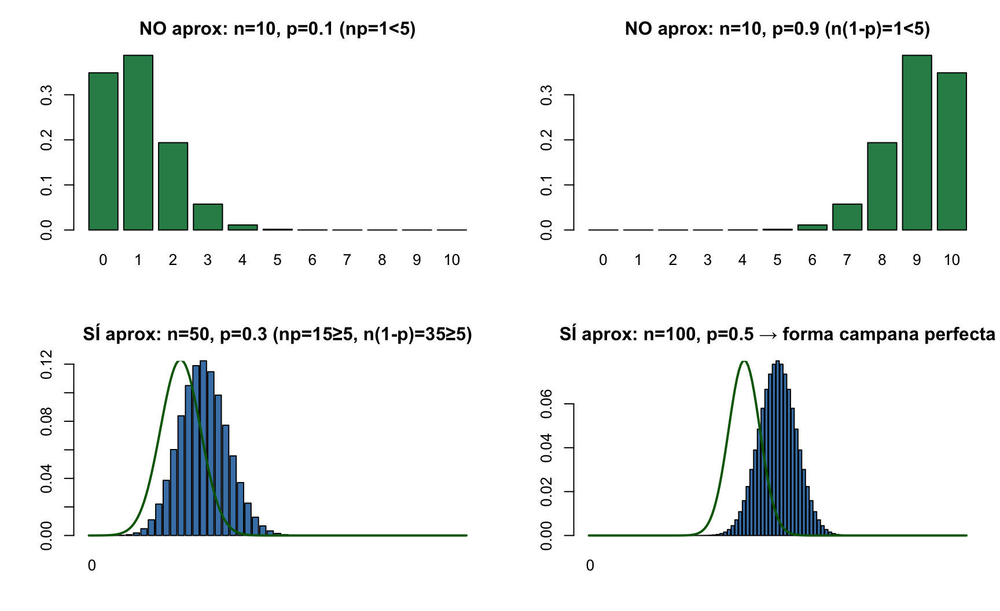
La Binomial es discreta (barras) y la Normal es continua (curva). Para aproximar \(P(X \leq k)\), sumamos/restamos 0.5:
| Probabilidad | Sin corrección | Con corrección (±0.5) |
|---|---|---|
| \(P(X \leq k)\) | \(\Phi\left(\frac{k-np}{\sqrt{np(1-p)}}\right)\) | \(\Phi\left(\frac{k+0.5-np}{\sqrt{np(1-p)}}\right)\) |
| \(P(X \geq k)\) | \(1-\Phi\left(\frac{k-np}{\sqrt{np(1-p)}}\right)\) | \(1-\Phi\left(\frac{k-0.5-np}{\sqrt{np(1-p)}}\right)\) |
Ejemplo clínico: Fármaco 40% efectivo, \(n=20\) pacientes. \(P(X \leq 10)\):
Exacto (Binomial): 0.8725
Normal sin corrección: 0.8193
Normal con corrección: 0.8731Tip
La corrección de continuidad (+0.5) reduce el error de aproximación drásticamente. En el ejemplo, el error pasa de ~5pp a <0.1pp.
¿Cuándo funciona? Cuando \(\lambda \geq 10\), el histograma de Poisson adopta forma simétrica.
par(mfrow=c(2,2), mar=c(4,4,3,1))
# Caso 1: λ=2 → NO se cumple (muy asimétrica)
lambda<-2; x<-0:(lambda*3)
barplot(dpois(x,lambda), names=x, col="seagreen",
main=paste0("NO aprox: λ=",lambda," < 10 (asimétrica)"))
# Caso 2: λ=5 → NO se cumple (todavía asimétrica)
lambda<-5; x<-0:(lambda*3)
barplot(dpois(x,lambda), names=x, col="seagreen",
main=paste0("NO aprox: λ=",lambda," < 10"))
# Caso 3: λ=10 → SÍ se cumple (empieza a ser simétrica)
lambda<-10; x<-0:(lambda*2)
bp <- barplot(dpois(x,lambda), names=ifelse(x%%5==0,x,""), col="steelblue",
main=paste0("SÍ aprox: λ=",lambda," ≥ 10"))
curve(dnorm(x,lambda,sqrt(lambda))*1, add=T, col="darkgreen", lwd=2, n=200)
# Caso 4: λ=25 → SÍ se cumple (claramente acampanada)
lambda<-25; x<-0:(lambda*2)
bp <- barplot(dpois(x,lambda), names=ifelse(x%%10==0,x,""), col="steelblue",
main=paste0("SÍ aprox: λ=",lambda," → forma campana clara"))
curve(dnorm(x,lambda,sqrt(lambda))*1, add=T, col="darkgreen", lwd=2, n=200)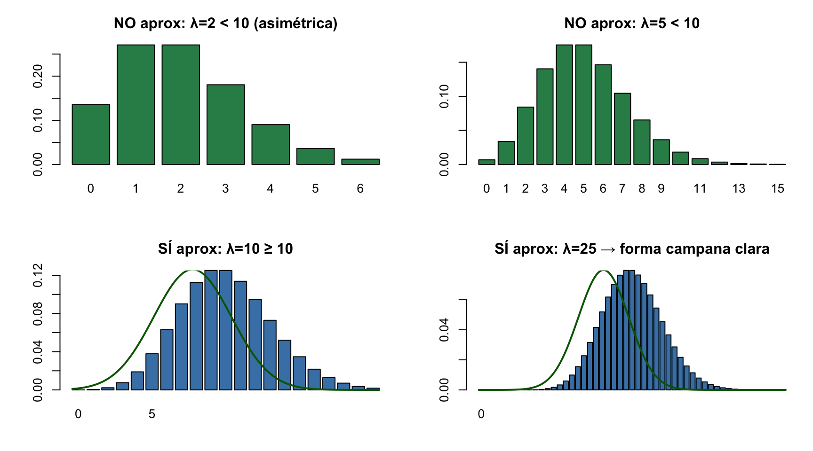
Cálculo manual: Con \(n=100\), calcular \(\binom{100}{50}\) a mano es imposible. La Normal lo resuelve con una fórmula simple.
Inferencia: Los IC y tests de hipótesis para proporciones usan la aproximación Normal (por eso usamos \(z_\alpha\), no \(t\)).
Teoría: El TCL garantiza que cualquier suma de variables independientes tiende a la Normal cuando \(n\) es grande — es la base de toda la inferencia estadística.
Software moderno: Aunque R calcula valores exactos, entender las aproximaciones ayuda a comprender por qué funcionan los métodos estadísticos.
Importante
Condiciones para aplicar la aproximación Normal a la Binomial: \(np \geq 5\) Y \(n(1-p) \geq 5\). Si no se cumplen, usar el método exacto (Binomial). Para Poisson: \(\lambda \geq 10\). Si no, usar el método exacto (Poisson).
Ejercicio Clínico — Aplicación de Probabilidad y Distribuciones
Un estudio sobre recuperación funcional tras accidente cerebrovascular reporta que el 30% de los pacientes recupera la marcha independiente en 6 meses.
dbinom(4, 10, 0.3).pbinom(5, 10, 0.3, lower.tail=FALSE).(95-75)/15. ¿Es un valor atípico?pnorm(95, 75, 15). Interpreta el resultado.d, p, q, r para trabajar con cualquier distribuciónReferencias complementarias del libro:
Referencias
Contexto: Fuerza de prensión \(\sim N(30, 8^2)\) kg. Paciente con 22 kg. Terapia con 70% éxito por paciente.
Tip
Solución
mu <- 30; sigma <- 8
par(mfrow=c(1,2), mar=c(4,4,3,1))
# Panel 1: Distribución normal
curve(dnorm(x, mu, sigma), mu-24, mu+24, lwd=3, col="steelblue",
main=paste0("P(X≤22) = ", round(pnorm(22,mu,sigma)*100,1),"%"),
xlab="Fuerza (kg)", ylab="Densidad")
abline(v=22, col="darkgreen", lwd=2)
xr <- seq(mu-24, 22, 0.1)
polygon(c(xr, rev(xr)), c(dnorm(xr,mu,sigma), rep(0,length(xr))),
col=rgb(0,0.5,0.3,0.3), border=NA)
# Panel 2: Binomial
p_binom <- dbinom(8, 10, 0.7)
probs <- dbinom(0:10, 10, 0.7)
highlight <- ifelse(0:10==8, "coral", "steelblue")
barplot(probs, names=0:10, col=highlight, border="white",
main=paste0("Bin(10,0.7): P(X=8)=", round(p_binom*100,1),"%"),
xlab="Nº mejorías", ylab="Probabilidad")
abline(h=p_binom, col="darkgreen", lty=2, lwd=2)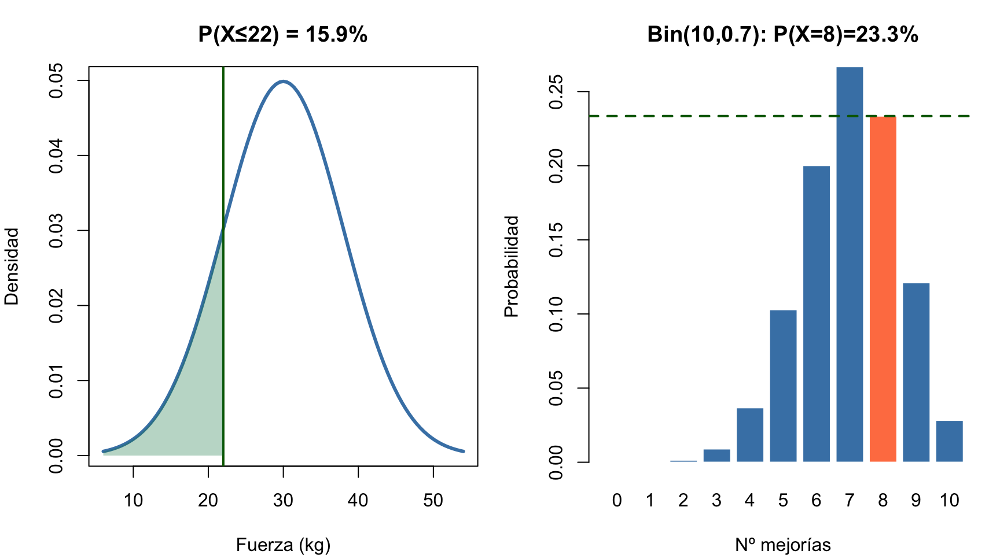
Z = -1
P(X≤22) = 15.9 %
P(X=8) = 23.3 %# Propiedades N(μ, σ²)
mu <- 30; sigma <- 8
pnorm(22, mu, sigma) # P(X < 22) = 15.9%
pnorm(38, mu, sigma) - pnorm(22, mu, sigma) # P(22 < X < 38) = 68.3%
# Z-scores
z <- (22 - 30) / 8 # Z = -1.0
pnorm(-1) # P(Z < -1) = 15.9%
# Percentiles clave
qnorm(0.975) # Z = 1.96 (IC 95%)
qnorm(0.995) # Z = 2.576 (IC 99%)
# lower.tail = FALSE para cola derecha
pnorm(1.96, lower.tail = FALSE) # P(Z > 1.96) = 2.5%# Binomial(n, p) — nº de éxitos en n ensayos
n <- 10; p <- 0.7
dbinom(8, n, p) # P(X = 8) exacto
pbinom(7, n, p) # P(X ≤ 7)
pbinom(7, n, p, lower.tail = FALSE) # P(X > 7) = P(X ≥ 8)
# Poisson(λ) — nº de eventos en intervalo
lambda <- 4
dpois(3, lambda) # P(X = 3)
ppois(2, lambda) # P(X ≤ 2)
# χ² y F — colas asimétricas
pchisq(13.87, 6, lower.tail = FALSE) # P(χ²₆ > 13.87)
pf(3.5, 5, 20, lower.tail = FALSE) # P(F₅,₂₀ > 3.5)
Bioestadística · Grado en Fisioterapia · UGR